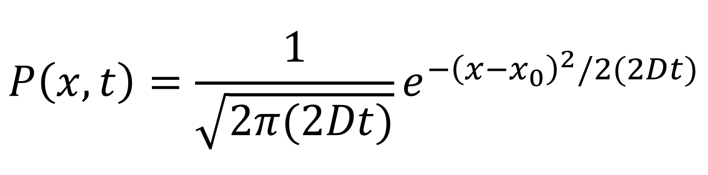

¡Hola! Soy
ARMANDO MANCILLA
Soy un estudiante de física interesado en sistemas complejos y ciencia de datos. Aquí hay algunos de los proyectos en los que he trabajado. Bienvenido a
Mi Portafolio


¡Hola! Soy
Soy un estudiante de física interesado en sistemas complejos y ciencia de datos. Aquí hay algunos de los proyectos en los que he trabajado. Bienvenido a
Durante la pandemia de COVID-19, los cases de infecciones diarias fueron procesados y reportados a
través de bases de datos públicas por CONACYT. Por razones de privacidad, no puedo revelar todos los
detalles sobre los Modelos Epidemiológicos que implementamos. Sin embargo, puedo proporcionar un
panorama general de algunas de las preparaciones requeridas para el análisis posterior, incluyendo
la limpieza de datos y la identificación de olas de infecciones.
Este proyecto fue elaborado completamente en Jupyter Notebook (Python), leyendo y procesando los datos
usando las librerías Pandas y Numpy. El análisis y la implementación del modelo se realizó
utilizando la librería Scipy, y la visualización se realizó utilizando Matplotlib.
Estudiamos la pandemia de COVID-19 en México desde la perspectiva de las olas de infección. Los datos fueron obtenidos de una base de datos CSV de CONACYT, incluyendo datos nacionales y estatales. Los datos sin procesar incluyen detalles que dificultan su lectura y procesamiento, dado que fueron proporcionados por múltiples instituciones médicas. Uno de los principales problemas que encontramos está en los fines de semana, donde los valores tienden a ser más bajos debido a que muchos de estos lugares trabajan con capacidades reducidas. Para ello, propuse un plan para la limpieza entendiendo las causas de las anomalías y creé una función que nos ayuda a automatizar este proceso para esta base de datos en particular.
Con los datos limpios, podemos comenzar la identificación de las olas específicas en la pandemia. Este proceso debe hacerse manualmente, pero gracias a la derivada, podemos facilitarlo al identificar los lugares donde la derivada es cero, algunos de los cuales corresponderán a los picos de las olas. Y después de delimitar los tiempos donde medimos cada ola, y mostrar las defunciones, podemos obtener una imagen más completa de nuestro fenómeno.

El mismo método puede aplicarse a los datos estatales, pero al hacerlo, debemos considerar que el número de casos es mucho menor que el nacional. Esto significa que las fluctuaciones son más pronunciadas y las anomalías son más difíciles de detectar. Podemos usar los mismos criterios que antes, pero debemos tener cuidado con el factor de tolerancia, ya que puede llevar a dificultades en la aplicación del modelo. En este caso, nos centraremos exclusivamente en los datos estatales de la región más pobladas de México.
Puedes consultar los programas en mi repositorio de GitHub.
En este proyecto, estudiamos la Caminata Aleatoria (definida simplemente como una sucesión de pasos aleatorios) en una red discreta, a través de la distribución de posiciones finales (su x posición en un tiempo t), o la distribución de las visitas (todas las posiciones en su camino), así como las propiedades estadísticas de estas distribuciones: varianza, asimetría, curtosis. Consideramos, además de la caminata aleatoria simple, dos modelos:
Para un mejor rendimiento, diseñé toda la simulación de los diferentes cases de caminatas aleatorias en Fortran, usando la OMP Library, midiendo la distribución de varias realizaciones de caminantes y las propiedades estadísticas que analizaremos más adelante. Los resultados son luego procesados y mostrados en un Jupyter Notebook. Aquí, planeo mostrar los resultados de las simulaciones, así como algo del contexto teórico (¡mucho texto!).
La Caminata Aleatoria es un concepto ampliamente conocido, pilar en muchos temas relacionados con
procesos estocásticos. Consiste básicamente en una sucesión de pasos aleatorios, y a partir de ella, hay
múltiples formas en las que podemos crear dinámicas diversificadas.
Este proyecto fue pensado para servir
como fundamento para entender la teoría y codificación de Caminatas Aleatorias, para facilitar el
desarrollo de futuros modelos basados en caminantes aleatorios. Este apartado reúne los resultados
producidos por las simulaciones de códigos Fortran, así como también proporciona un poco de
contexto teórico.
Los resultados de este proyecto se basan principalmente en Funciones de Densidad de Probabilidad (PDFs), y en el análisis de los momentos estadísticos, propiedades únicas de cada distribución. Hay algunos conceptos que necesitamos definir para tener una mejor comprensión de las siguientes secciones. Podemos definir los momentos en bruto de cualquier variable z como

Propiedades como la varianza, asimetría y curtosis son momentos estadísticos calculados a partir de los momentos en bruto.

Y lo mismo aplica para los siguientes momentos. En combinación con estos dos, siempre que tengamos una
PDF analítica, podemos intentar calcular los momentos estadísticos también.
Dentro de la simulación, tenemos que considerar cantidades discretas, y el cálculo numérico de los
momentos en bruto obedece a la siguiente fórmula:

Es obvio notar que esto es solo un promedio sobre el número de realizaciones
m. En nuestras simulaciones, z
corresponde a las posiciones finales.
Debemos discutir un poco más sobre el significado de los momentos estadísticos. Estas son cantidades que
muestran ciertos aspectos de una Distribución de Probabilidad, incluso podemos pensar en ellos como
identificadores personalizados. El primero, el valor medio, Μ1,
representa un punto que indica la tendencia central de los datos, para distribuciones simétricas, este
se ubica sobre su eje de simetría. En el contexto de Caminatas Aleatorias, este suele ser
0. El siguiente es la varianza,
Μ2, que indica qué tan dispersos están los datos
alrededor de la media. En este tema, puede darnos información sobre las posiciones finales que los
caminantes pueden alcanzar, y qué tipo de dinámica seguirán sus caminos. El tercer momento es bastante
directo, se llama asimetría, Μ3, y su valor mide la
simetría de la distribución, si es 0, la distribución es simétrica, si es
negativo, está sesgada a la izquierda, y si es positivo, está sesgada a la derecha. Finalmente, el
cuarto momento, la curtosis, Μ4, se refiere a la forma de
de la distribución, específicamente la forma de sus colas. Cuanto mayor sea la curtosis, más anchas
serán las colas, y para valores más bajos la mayoría de los datos se concentran alrededor de la media,
con colas más chicas. Para referencia, la curtosis de la distribución normal es de
3.

Hay un aspecto técnico que tenemos que considerar para medir una distribución de posiciones de caminantes aleatorios, esta es la posible posición final. Para tener una mejor idea, pensemos en una caminata aleatoria con 3 pasos comenzando desde 0: en el primer paso, el caminante solo puede estar en -1 o +1, el cero no es parte de estas opciones. En el segundo paso, el caminante puede estar en -2,0,+2, aquí ya comenzamos a notar un patrón. En el paso final, la tendencia es más visible, ya que las posiciones finales posibles del caminante son -3,-1,+1,+3. Por lo tanto, vemos que la posición final del caminante, en una malla discreta, depende de si el número de pasos es impar o par, y una medida de la distribución bajo estas circunstancias tendría huecos, dependiendo del número de pasos. Para contrarrestar este efecto, al final del tiempo, donde pretendemos medir las posiciones finales, solo actualizamos la mitad de los caminantes, de modo que la mitad de las posiciones finales sean números pares y la otra mitad sean números impares.
Antes de adentrarnos en la teoría detrás de las caminatas aleatorias, quiero hablar brevemente de los detalles más generales sobre estos procesos. Comenzando por el caso simple de la Caminata Aleatoria. Podemos definirla como una secuencia de pasos aleatorios, y visualizarla como la suma de todos ellos. Llamemos a esta suma X:
Y, por supuesto, el valor final de X depende de la cantidad de pasos
n.
Para facilitar la comprensión y el estudio, estos pasos aleatorios solo pueden ser
+1 o -1, ambos elegidos con una
probabilidad de 1/2. Esto se puede pensar como un caminante que puede ir
hacia arriba o hacia abajo.

Si en lugar de dos opciones (+1,-1), pudiéramos hacer que el caminante regrese a su posición inicial, X0, con una probabilidad γ = 1/10, es decir, resetearlo aproximadamente cada 10 pasos, entonces tendríamos lo que llamamos la caminata aleatoria con reseteo. Más adelante, veremos cómo esto afecta la dinámica de la caminata simple, pero por ahora puedo decir que lo mantendrá más cerca de esta posición X0.
Ahora bien, si la reubicación del caminante no se hace a su posición inicial, sino a una de las
posiciones que ha visitado anteriormente, estamos permitiendo que nuestro caminante tenga memoria.
Con esto, los lugares que visita más tienen más posibilidades de ser elegidos cuando salta.
Esta dinámica se implementa con una probabilidad γ.
Para visualizar esto, hacemos una simulación de caminata aleatoria con memoria antes de mostrarla, así que
el caminante que mostramos tiene de antemano una distribución de visitas existente.

Con ambos tiempo y espacio discretos, como vimos en la sección de Caminatas Aleatorias Individuales, la probabilidad de encontrar al caminante en la posición x en un paso dado n está definida por la ecuación de evolución

Sin embargo, queremos estudiar el comportamiento de la caminata aleatoria en el régimen continuo, para esto, debemos considerar las aproximaciones de diferencias finitas para obtener una Ecuación Diferencial Parcial:
Con esta aproximación, podemos cambiar a las variables continuas x,t, y con un poco de álgebra, la ecuación que describe la evolución de la probabilidad se convierte en

con D = 1/2. Esta es la Ecuación de Difusión, como podría esperarse para partículas difusivas, ya que se puede pensar en los caminantes aleatorios como tales.
La solución a la Ecuación de Difusión se puede obtener haciendo un cambio de variable, usando la transformada de Fourier: P (k,t) = ∫ P(x,t) exp(-ikx) dx. El resultado es una función Gaussiana:
Aquí, también conseguimos algunos resultados prematuros al comparar esto con la distribución normal, por ejemplo, el valor medio es Μ1 = x0 (0 en nuestro caso), y la varianza es Μ2 = 2Dt. Esta función es una distribución de Posiciones Finales, es decir, la posición donde se puede encontrar a un caminante después de un tiempo t.
El resto de las propiedades estadísticas se pueden calcular a partir de esta función. No es sorprendente que para una distribución simétrica, la asimetría resulte en Μ3 = 0, y la curtosis es la misma que la de la distribución Gaussiana, Μ4 = 3.
Todos los resultados de la simulación siguen un comportamiento similar al de una Gaussiana, solo difiriendo entre sí en la varianza que aumenta linealmente con el tiempo. Sin embargo, los momentos estadísticos medidos en tiempos iguales son los mismos. Como mencionamos antes, la curtosis indica claramente una distribución cercana a una Gaussiana.
Existe también otro tipo de distribución que recopila toda la información sobre el camino que siguen los caminantes. En lugar de observar únicamente las posiciones finales, podemos llevar un registro de las visitas que los caminantes hacen a las posiciones. En un sentido matemático, esto es similar a apilar todas las distribuciones de posiciones finales para diferentes tiempos, hasta el tiempo t.

con 𝒩 siendo la constante de normalización. Para la caminata simple, esto resulta en
Aquí, erfc() es la función error complementaria. En este caso,
los valores de los momentos estadísticos no son tan intuitivos, pero se pueden calcular con la PDF.
La varianza es solo la mitad de lo que esperamos para las posiciones finales,
Μ2 = Dt. La curtosis ahora tiene un valor de
Μ4 = 4, lo que significa que más valores están
concentrados alrededor de la media, naturalmente para la medición de visitas.
Hay un cambio en cómo medimos los momentos estadísticos, relacionado con la normalización. Cuando solo
contamos las posiciones finales de los caminantes, para promediar los momentos solo dividimos por el
número de realizaciones m
(Introducción). Sin embargo, al tener en cuenta todas las
visitas, también debemos promediar en el tiempo:

Por esta condición, en las simulaciones, todas las realizaciones deben hacerse al mismo tiempo, en lugar de comenzar la siguiente una vez que la actual ha terminado.
En el caso del reseteo, un caminante aleatorio no solo puede moverse a posiciones vecinas, sino que también tiene una probabilidad γ de regresar a su posición inicial x0. Esto limita la difusión del caminante, es decir, qué tan amplio es el rango de posiciones finales posibles.
Podemos encontrar una ecuación diferencial parcial (PDE) que describe la evolución de la PDF para el caso de reseteo. Comenzando desde la Ecuación de Difusión, que define la dinámica de la caminata aleatoria simple, usamos dos nuevos términos que implementan el reseteo. Cuando un caminante es reubicado, con probabilidad γ, la PDF pierde un flujo de probabilidad en la posición x que se suma a la posición inicial del caminante x0, representada como una función δ (Evans M. & Majumdar S., 2011).

En este caso, la constante de difusión D no es la misma que para la caminata simple. Empíricamente, encontramos que D = (1 - γ)/2.
Esta PDE puede reducirse a una ecuación estacionaria, que se convierte en una Ecuación Diferencial Ordinaria no homogénea. Después de resolver esta nueva ecuación, obtenemos una solución independiente del tiempo.

con α0 = √2γ/(1 - γ). En la misma línea, usando la solución estacionaria podemos obtener algunos resultados para los momentos. Por ejemplo, la varianza, también independiente del tiempo, tiene un valor de Μ2 = (1 - γ)/γ. La curtosis muestra un alto valor de Μ4 = 6, independientemente de la probabilidad de reseteo, indicando colas más grandes para estas distribuciones.

El reseteo es uno de los modelos más notables de la caminata aleatoria. La varianza indica la la dificultad existente para alcanzar nuevas posiciones, haciendo parecer que los caminantes están atrapados dentro de un rango específico.
Algo interesante sucede cuando intentamos encontrar la PDF para las visitas. Si usamos nuestra solución estacionaria, obtenemos el mismo resultado, ya que su independencia del tiempo da t como resultado de la integral y la constante de normalización al mismo tiempo, por lo que se anula. Y las simulaciones sugieren que no hay un gran cambio en las dinámicas.
Al mirar la distribución y las propiedades estadísticas, podemos ver que este caso es cercano a ser independiente del tiempo. ¿Por qué "cercano"? La pequeña cantidad de datos en las posiciones finales, en comparación con las visitas, nos da un resultado de varianza que puede no mostrar el panorama completo. Aquí, la curtosis y la PDF son las mismas que antes, pero hay una diferencia en la varianza producida por una mejor resolución de datos. Esta nueva perspectiva indica un comportamiento asintótico que tiende al valor que calculamos teóricamente usando la solución estacionaria, pero los efectos estocásticos en la dinámica de reseteo, es decir, la probabilidad de reseteo, permiten que los caminantes lleguen a nuevas posiciones con el suficiente tiempo.
Este caso permite una reubicación de los camiantes además del paso normal, pero en lugar de colocar al caminante en una posición definida, esta se elige de acuerdo con una distribución de probabilidad de todos los sitios visitados hasta ese momento. Esto significa que el caminante tiene una memoria de los lugares que ha visitado.

Podemos escribir una ecuación diferencial parcial, similar al reseteo. En este mismo sentido, tenemos un flujo negativo de probabilidad que sale de la posición x, sin embargo, esto se suma a un término que representa la distribución de visitas en lugar de una sola posición (Boyer D. & Solis-Salas C., 2014).
No podemos encontrar una expresión analítica para la PDF, sin embargo, podemos convertir la incógnita de la última ecuación en el segundo momento, dependiente solo del tiempo. Esto se hace aplicando la definición de los momentos estadísticos que discutimos al principio de este documento en la Introducción; después de lo cual aplicamos una derivada temporal para remover la integral.

Debido a la naturaleza simétrica del fenómeno, podemos anticipar que el promedio sea cero, por lo que podemos asumir que la solución se aplica a la varianza Μ2:

Aquí, E1 es una función de la Integral de una Exponencial, y γe es la constante de Euler. Podemos intentar hacer una aproximación a la PDF simulada usando la ecuación Gaussiana, cambiando la varianza por el valor de Μ2(t) en el último paso, solo por razones de comparar.
Vemos que, a pesar de que las posiciones de los caminantes están restringidas alrededor del 0, la varianza no es tan lenta como en el caso de reseteo. Aunque podríamos pensar que la distribución coincide con una Gaussiana, la curtosis indica claramente algo diferente, y la aproximación que propusimos termina respaldando este argumento, ya que las colas crecen más que las de una Gaussiana.
Esta es una extensión de lo que hemos visto sobre las distribuciones de visitas. Sin embargo, dado que no no conocemos la PDF para las posiciones finales de una caminata aleatoria con memoria, tampoco tenemos alguna información sobre la PDF para las visitas. A diferencia de la relación entre la PDF en las visitas y en las posiciones finales, no hay conexión entre las varianzas entre de estos casos.

Puedes consultar los programas en mi repositorio de GitHub.
Este es un proyecto que realicé en mis Prácticas Profesionales, diseñado para ser una simulación ilustrativa de un gas de Esferas Duras para cursos de Mecánica Estadística, bajo la supervisión y dirección del Dr. Thomas Gorin. El programa está inspirado en el artículo de 1953: Equation of State Calculations by Fast Computing Machines, de Metropolis N. et al. El programa presentado aquí es un demo por razones de privacidad. El programa es una Interfaz de Usuario basada en consola creada en SciLab (una alternativa de software libre a MATLAB), donde el usuario puede modificar los parámetros de la simulación.
El algoritmo de Metropolis es un método de Monte Carlo utilizado para muestrear a partir de una distribución de probabilidad. A diferencia del método de Monte Carlo, el cambio en el estado del sistema nos permite tener más resolución debido a las muestras de la distribución. El algoritmo se basa en la idea de aceptar o rechazar un nuevo estado en función de la diferencia de energía entre el estado actual y el nuevo estado. Como resultado, para sistemas con un gran número de partículas, el algoritmo de Metropolis es una herramienta poderosa para simular sistemas termodinámicos con más flexibilidad al escoger el tamaño de las partículas.


Esta simulación tiene como objetivo calcular una variable relacionada con la ecuación de estado del sistema, PV/NkT - 1, como función de A/A0 - 1, un parámetro de control que relaciona el espacio ocupado por las partículas y el área de la caja. A continuación, se presenta una comparación entre los resultados obtenidos por ambos métodos.
Puedes consultar los programas en mi repositorio de GitHub.
Este proyecto aún está en progreso, pero algunas características están lo suficientemente pulidas. La aniquilación es un proceso que ocurre cuando dos caminantes aleatorios son eliminados del sistema al encontrarse entre sí. Usamos una configuración de anillo de nodos discretos para medir fácilmente la concentración de los caminantes en cualquier momento (#caminantes/#nodos). Hay dos formas en las que podemos actualizar la posición de los caminantes, y estas darán forma al comportamiento de los resultados:
Estudiamos la evolución de la variable de concentración, medida cada paso de MonteCarlo (MCS), que es,
después de n iteraciones, siendo n
el número de nodos. Podemos observar otras variables como la distribución de la distancia al vecino más
cercano, que se define como el número de nodos que separa a dos caminantes contiguos.
La simulación se realiza en un anillo 1D, como una malla con condiciones de frontera periódicas.
Los caminantes se colocan aleatoriamente en los nodos, y la aniquilación se lleva a cabo cuando dos
caminantes están en el mismo nodo. Las simulaciones se desarrollan en Fortran, utilizando la
Biblioteca OMP, y los resultados se muestran en Jupyter Notebook.
El tipo de actualización que elegimos para cambiar las posiciones de los caminantes es importante, ya que afectará el comportamiento de la concentración. Para entender esto, discutamos los dos casos por separado. Para empezar, en la actualización Asincrónica, seleccionamos un nodo al azar, y si hay un caminante en él, actualizamos su posición, y si hay otro caminante en la nueva posición, eliminamos ambos. Esto significa que la aniquilación solo depende del movimiento de un caminante. Repetimos este proceso un número n (número de nodos) de veces para completar un Paso de MonteCarlo (MCS). Ahora bien, la actualización Síncrona es un poco más compleja, y vale la pena mostrar un diagrama para explicarlo:

En la actualización Síncrona, vamos nodo por nodo, y si hay un caminante en alguno, tenemos diferentes situaciones. En el primer escenario, no hay caminante en la nueva posición, así que simplemente lo movemos. En el segundo caso, hay un caminante en la nueva posición, y tenemos que verificar las siguientes condiciones (3-5). Como tenemos un anillo 1D, los caminantes no pueden intercambiar posiciones, y si se mueven en direcciones opuestas, se aniquilarán. Si ambos se mueven en la misma dirección y no encuentran un tercer caminante, sobrevivirán. Y, finalmente, si sí existe un tercer caminante, el primero sobrevive y tenemos que verificar las condiciones nuevamente para el último par.
Los resultados de las simulaciones para sistemas grandes, con 4,000 nodos y 2,000 caminantes (50% de ocupación inicial), se muestran a continuación.
Al principio, el decaimiento de la concentración difiere para ambos casos, probablemente debido a la difusión extra proporcionada por la selección aleatoria de los nodos en la actualización Asincrónica. Podemos obtener una mejor perspectiva del comportamiento de la concentración observando la distribución de la distancia al vecino más cercano. Esta se define como el número de nodos que separa a dos caminantes contiguos. La distribución se muestra a continuación:

En un tiempo como t = 10 MCS, podemos ver que la actualización Síncrona tiene una mayor probabilidad de tener caminantes más cercas de otros, ya que la distribución se inclina hacia la izquierda. Esto indicaría tasas de aniquilación más bajas, en contraste con la actualización Asincrónica, sin embargo, después de unos cuantos MCS más, ambas distribuciones siguen la misma tendencia.
Puedes consultar los programas en mi repositorio de GitHub.

Mientras trabajaba en mis proyectos principales, usualmente desarrollaba simulaciones y analizaba lo que pasaba en los resultados en compañía de mis asesores. A veces nos encontrábamos con curvas donde no podía explicar qué patrón seguían, particularmente, si los cambios en la evolución no eran significativos, y mis asesores sugerían usar una escala logarítmica en uno o ambos ejes. Aunque esto no revela directamente el comportamiento específico, proporciona pistas útiles, que ellos eran capaces de ver. Entonces, cuando volví a mi casa, grafiqué distintas funciones y probé la escala logarítmica en ellas. Claro, aquí presento el caso más ideal, pero lo que importa es ser capaz de notar las características individuales una vez que la escala se aplica.
También podríamos pensar en esta escala logarítmica como aplicar la función log() a alguna de las variables, sea y o x, pero esto solo cambiando la forma en que se ve. Cada función tiene sus propias características, y por lo tanto los ejes a los que escalamos pueden revelar su naturaleza. Para mí, rescalar el eje x no ofrece mucha información, creo que un mejor indicador es encontrar una escala que convierta nuestros datos en una línea, eso mostraría su comportamiento.
Seleccioné estas funciones en específico por ser tan conocidas. Pero el entretenimiento terminó muy pronto, ya que tres de ellas son leyes de potencias (y ∼ a xγ), que se pueden apreciar claramente al escalar logarítmicamente ambos ejes. Para la función raíz, γ = 1/2; para la cuadrática, γ = 2; y para la racional, γ = -1. En estos casos, los datos lucen como una recta con pendiente γ.
Después de escuhar sobre uno de los desafíos que enfrentará nuestra generación en un par de décadas, la tendencia global del decaemiento de la población, sentí curiosidad por ver si podía apreciar esta tendencia con los datos de los residentes actuales. Por supuesto, ya existen algunos números allá afuera sobre países y sobre cuándo alcanzarán el pico de población, pero quería algo más específico. Así que busqué información sobre Jalisco, el estado donde vivo actualmente, y encontré los datos del INEGI, que tomé para hacer mi ajuste. En cuanto apliqué la escala logarítmica al eje y, pude ver un comportamiento parecido a una Gaussiana, así que esto es lo que utilizo para obtener mis resultados. Pude encontrar que el pico de población en Jalisco sucederá en 2045, 5 años por delante que este mismo número pero para México como país. El máximo de personas será de 9,248,000 solo 10% extra del número de habitantes registrado hasta el año 2020.
Además de los censos del INEGI cada 10 años, el IIEG también estima el número de personas que hay en Jalisco cada 5 años. Así que estoy esperando la estimación de este 2025 para ver si este valor se encuentra dentro de mis predicciones.
La idea que inició este mini proyecto vino a mí cuando volví a ver la serie de Dr. House. En algunas partes me empecé a sentir un poco decepcionado de los eventos que ocurrían, puede que fuera solo yo queriendo que las cosas fueran diferentes, de cualquier forma, no podía evitar preguntarme si era el único sientiéndose así, así que fui a inspeccionar las calificaciones de IMDB, que no me dijeron mucho. Entonces, en un último intento de llegar a algunas conclusiones sobre cómo la gente se sintió con las últimas temporadas, hicé un estudio estadístico de las calificaciones de los episodios.
Para empezar en algún lado, decidí que estaría bien tener un mapa de las calificaciones para visualizar directamente dónde se encuntran los mejores y peores episodios.
Todo bien, pero esto es solo una introducción. Podría ser que al mirar las calificaciones por temporadas con sus promedios nos diga algo sobre la opinión de la gente. Con un promedio total de 8.38, no podemos negar que la serie tiene algo poco común para otras de una duración similar, y eso es la consistencia. Casi todas las temporadas tienen un promedio similar al total, e incluso, existe consistencia en cada temporada, con 3 temporadas teniendo menos de 0.15 de varianza. Por supuesto, con todo y todo, las últimas dos temporadas tuvieron una pequeña caída de calidad, y realmente no estoy seguro de si esta fue la razón de su final. La última tempora es algo diferente; tiene el peor episodio entre todos, pero también tiene uno de los 10 mejores episodios, y sí, la mayor varianza de todas las temporadas, indicando menos consistencia. Es interesante ver ese pico en el medio, siendo como un rayo de esperanza en, posiblemente, la peor temporada de todas. Desafortunadamente, después del desarrollo de personaje de Chase, las bajas calificaciones siguieron por un par de episodios hasta que comenzó la construcción del arco final. Solo quiero recordar que la serie aún así es bastante buena, y estos episodios, aunque bajos respecto a otras temporadas, son muy entretenidos, pero ya comenzaba a notarse un desgaste.
Con este par de gráficos, también podemos ver que es más probable encontrar los mejores episodios al final de las temporadas. Esto pasa porque, a pesar de que la mayoría de los episodios se centran en enigmas médicos, la serie presenta arcos narrativos que tienden a desarrollarse a través de la temporada, culminando en su conclusión al final.
Ahora bien, si nos enfocamos en la distribución de las calificaciones, obtenemos este histograma raro. Casi pareciera como si estuviera sesgado a la derecha, sin embargo, esto puede ser engañoso, ya que casi la mitad del número de episodios se puede encontrar en ambos lados del promedio, a lo mucho, está ligeramente sesgado. Muchos episodios están amontonados justo a la izquierda del promedio, pero existen muy buenos episodio que incrementan su valor.
La desviación estándar de todo el show es 0.5, y el 65% de los episodios caen dentro del rango de una desviación estándar del promedio, entre 7.90 y 8.86, lo que es remarcable para una serie de 176 episodios y 8 años en emisión.
Finalmente, me interesé en la relación entre las calificación de un episodio y su popularidad, medida como el número de votos. Claro que este tema podría ser un debate en sí mismo. Después de ver un buen episodio, incluso las personas que no suelen calificarlos podrían querer hacerlo. Es un poco una situación del huevo y la gallina. IMDB tiene filtros para prevenir la sobrepuntuación debida a la popularidad u otras razones, pero eso no elimina la posibilidad de que haya una conexión.
Algunos episodios no siguen las mismas condiciones que todo el grupo, así que los removí del cálculo de la correlación. Estos son comúnmente los mejores episodios de la serie, pero algunos aleatorios. La correlación es, entonces, de 0.61, indicando que existe una conexión, ¿pero qué viene primero? ¿La calificación o la popularidad? Una cosa es segura, hay una clara caída en la popularidad de todo el show a medida que el número de temporadas incrementó.
Como comentario final, me pareció una forma divertida de ahondar en una serie que realmente disfruté. No planeaba volver esto un análisis formal, solo quería explorar cómo los datos pueden mostrar nuestras experiencias subjetivas. Dr. House es una serie de televisión muy sólida, y pasar por esto solo me hace querer verla de nuevo.
No dudes en contactarme. Sigue mi trabajo en LinkedIn o envíame un correo a armando.mancilla.b@gmail.com
© Armando Mancilla, 2025